Main Effects and Interactions
Recall: Battery Lifetimes
Main effect of Temperature.
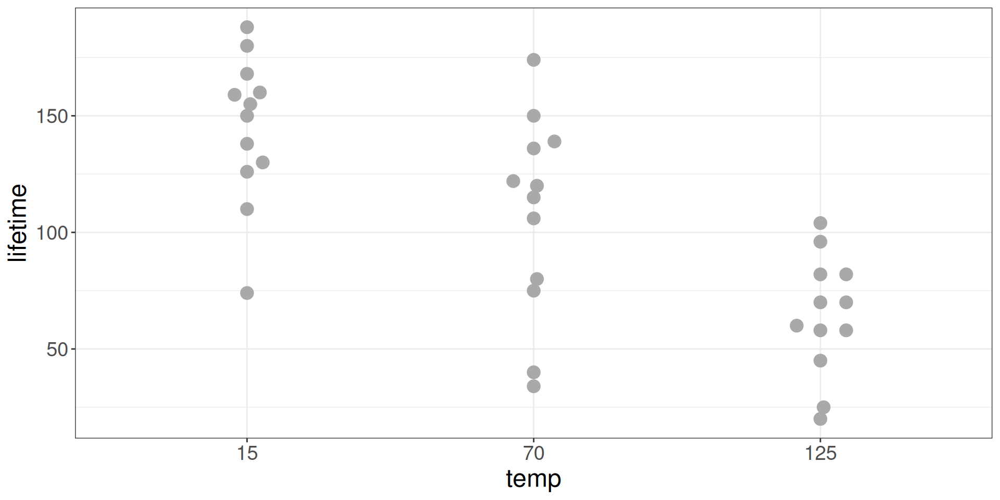
Recall: Battery Lifetimes
Main effect of Material.
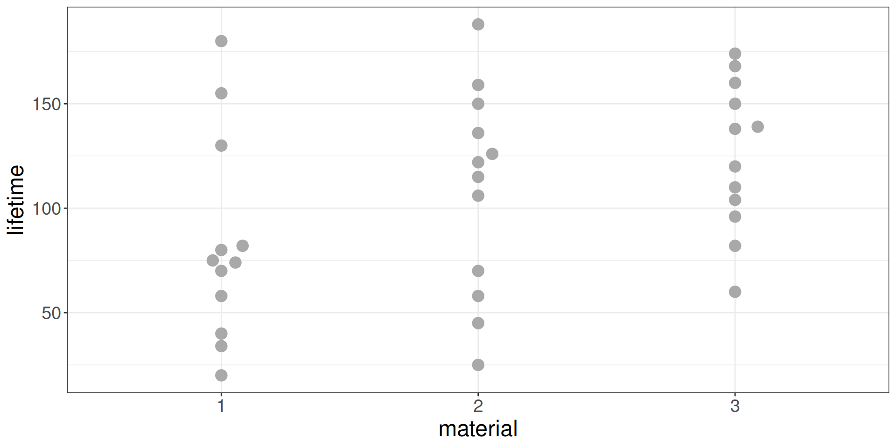
Recall: Battery Lifetimes
All effects.
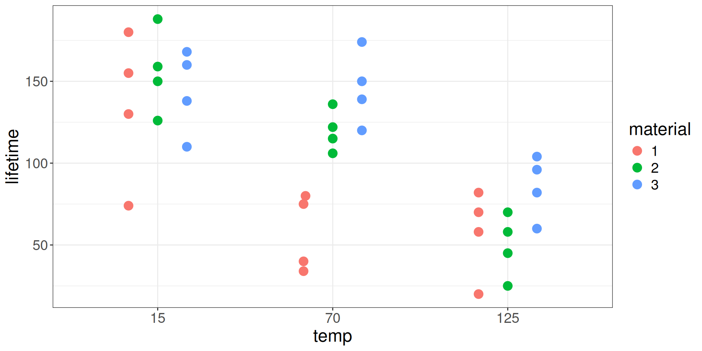
Building a Model
Models for Two Factors
- Main Effects Only (Additive Model)
- Main Effects + Interactions
1. Additive Model
\[ Y_{i} = \mu + \alpha_{j(i)} + \beta_{k(i)} + \epsilon_{i} \]
Zero-sum constraints:
\[ \sum_{j=1}^J \alpha_j = 0 \quad \quad \quad \sum_{k=1}^K \beta_k = 0 \]
1. Additive Model (simulated data)
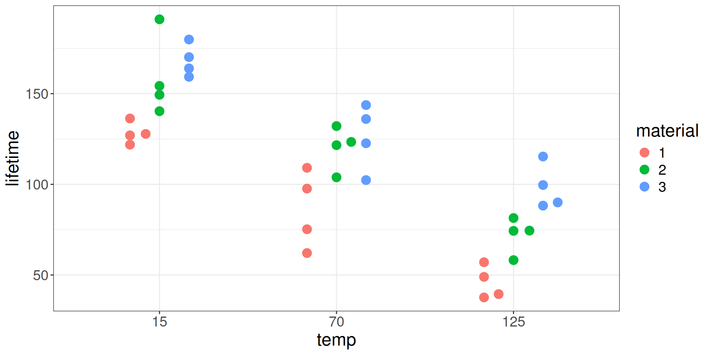
\(\quad\)
1. Additive Model
Estimates:
\[ \begin{aligned} {\hat{\mu}} &= \hat{\bar{Y}} \\ {\hat{\alpha}}_j &= \hat{\bar{Y}}_{j} - \hat{\bar{Y}} \\ \hat{\beta}_k &= \hat{\bar{Y}}_{k} - \hat{\bar{Y}} \end{aligned} \]
Why use these estimates?
1. Additive Model (simulated data)
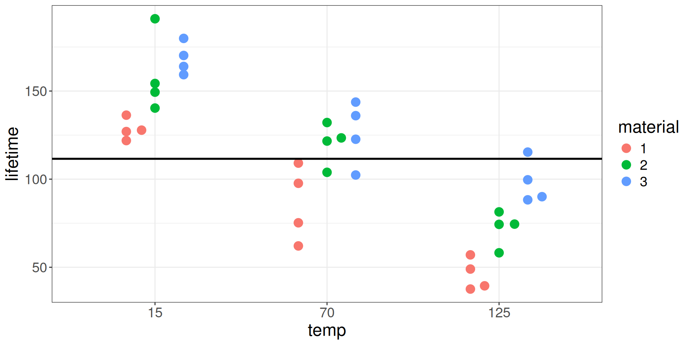
\(Y_i = \hat{\bar{Y}}\)
1. Additive Model (simulated data)
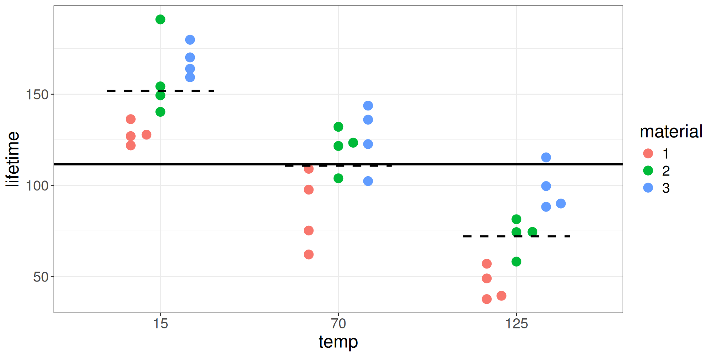
\(Y_i = \hat{\bar{Y}} + \hat{\alpha}_j\)
1. Additive Model (simulated data)
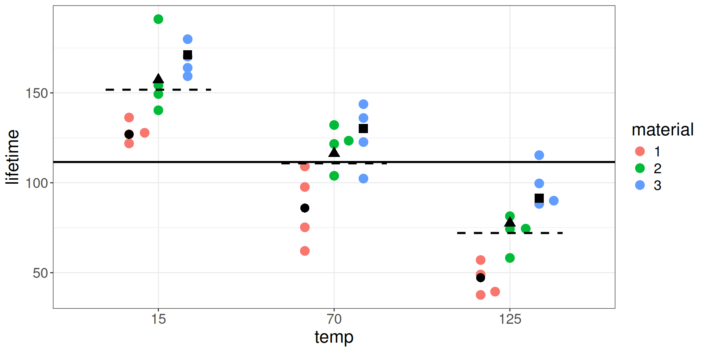
\(Y_i = \hat{\bar{Y}} + \hat{\alpha}_j + \hat{\beta}_k\)
1. ANOVA for Additive Model (simulated data)
Df Sum Sq Mean Sq F value Pr(>F)
temp 2 39119 19559 21.776 1.24e-06 ***
material 2 10684 5342 5.947 0.00651 **
Residuals 31 27845 898
---
Signif. codes: 0 '***' 0.001 '**' 0.01 '*' 0.05 '.' 0.1 ' ' 1Battery Lifetimes (Real Data)

Interaction Plot 1
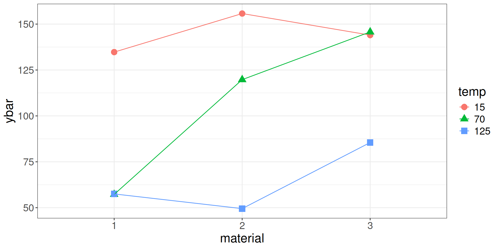
Interaction Plot 2
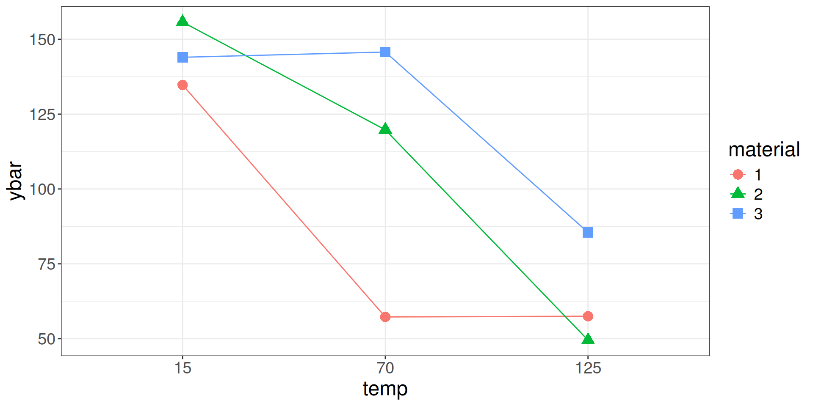
Interaction Plots
- Each plot displays the group averages as a function of one factor.
- If there are no interactions, the lines should be parallel.
2. Two-way ANOVA with Interactions
\[ y_{ijk} = \mu + \alpha_i + \beta_j + \gamma_{ij} + \epsilon_{ijk} \]
2. Two-way ANOVA with Interactions
Df Sum Sq Mean Sq F value Pr(>F)
temp 2 39119 19559 28.968 1.91e-07 ***
material 2 10684 5342 7.911 0.00198 **
temp:material 4 9614 2403 3.560 0.01861 *
Residuals 27 18231 675
---
Signif. codes: 0 '***' 0.001 '**' 0.01 '*' 0.05 '.' 0.1 ' ' 1Randomization F tests
Algorithm to generate null distribution
- Shuffle the response
- Calculate F-statistics
- Rise and repeat
Then compare null distribution to observed statistics.
Observed statistics
Simulated data frame
First shuffle:
id material temp lifetime
1 1 1 15 122
2 2 1 15 136
3 3 1 70 25
4 4 1 70 150
5 5 1 125 155
6 6 1 125 20
7 7 1 15 130
8 8 1 15 150
9 9 1 70 139
10 10 1 70 58
11 11 1 125 70
12 12 1 125 75
13 13 2 15 34
14 14 2 15 60
15 15 2 70 45
16 16 2 70 106
17 17 2 125 160
18 18 2 125 104
19 19 2 15 82
20 20 2 15 96
21 21 2 70 168
22 22 2 70 110
23 23 2 125 126
24 24 2 125 58
25 25 3 15 188
26 26 3 15 120
27 27 3 70 82
28 28 3 70 115
29 29 3 125 174
30 30 3 125 80
31 31 3 15 70
32 32 3 15 74
33 33 3 70 159
34 34 3 70 138
35 35 3 125 180
36 36 3 125 40Simulated data frame
Second shuffle:
id material temp lifetime
1 1 1 15 60
2 2 1 15 74
3 3 1 70 70
4 4 1 70 75
5 5 1 125 120
6 6 1 125 115
7 7 1 15 58
8 8 1 15 180
9 9 1 70 136
10 10 1 70 82
11 11 1 125 159
12 12 1 125 20
13 13 2 15 174
14 14 2 15 110
15 15 2 70 122
16 16 2 70 104
17 17 2 125 106
18 18 2 125 160
19 19 2 15 58
20 20 2 15 96
21 21 2 70 82
22 22 2 70 80
23 23 2 125 40
24 24 2 125 34
25 25 3 15 139
26 26 3 15 25
27 27 3 70 130
28 28 3 70 155
29 29 3 125 126
30 30 3 125 45
31 31 3 15 70
32 32 3 15 150
33 33 3 70 138
34 34 3 70 150
35 35 3 125 168
36 36 3 125 188As a function
Run Simulation 5 times
[,1] [,2] [,3] [,4] [,5]
[1,] 1.057870 2.2623417 0.1545131 0.2875059 0.3891141
[2,] 1.447381 0.6046787 0.2802976 1.2278416 2.6550284
[3,] 1.107107 0.1233809 0.1720598 0.2389194 0.2353213
[4,] NA NA NA NA NARun Simulation 500 times
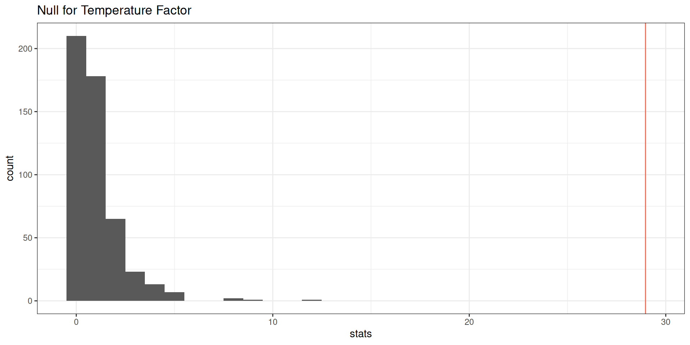
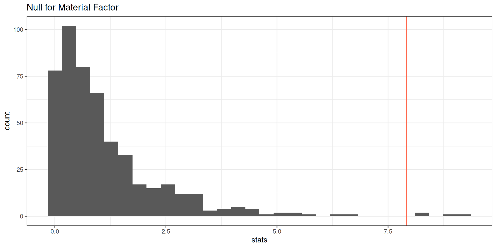
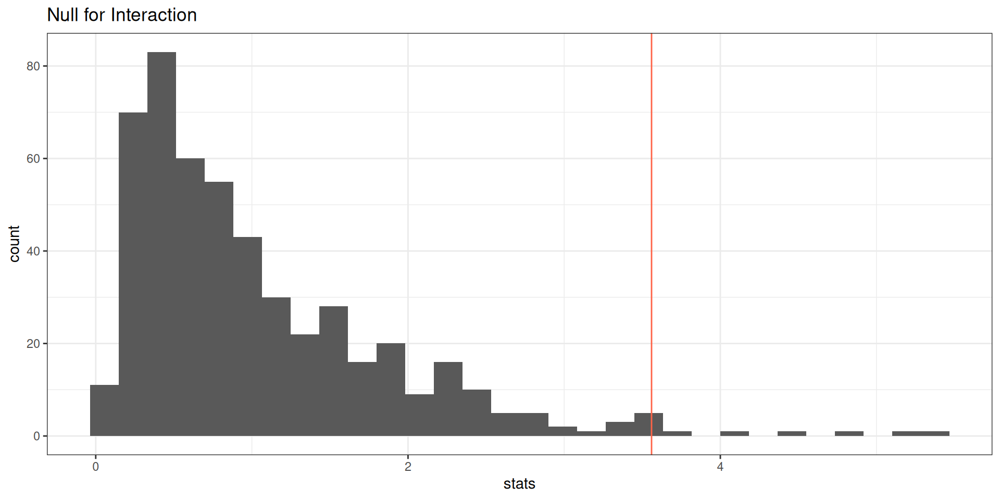
Interaction p-values compared
pval
1 0.014